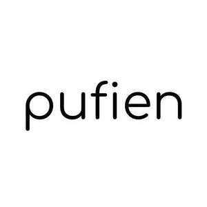

Trade Mark Journal No.2025/036 5 September 2025
UK00004254130 25 August 2025 (25)

- Class 25
- Baby boots; Baby sandals; Baby shoes; Booties; Knitted baby shoes; Baby bodysuits; Baby pants; Bootees (woollen baby shoes); Baby bottoms; Baby clothes; Baby tops; Plastic baby bibs; Baby doll pyjamas; Baby layettes for clothing; Clothing for babies; Underpants for babies; Socks for infants and toddlers; Shoes for infants; Infant wear; Dresses for infants and toddlers; One-piece clothing for infants and toddlers; Overalls for infants and toddlers; Snap crotch shirts for infants and toddlers; Infant clothing; Clothing for infants; Maternity clothing; Layettes [clothing]; Clothing layettes; Clothing; Clothing for children; Swaddling clothes; Clothes; Headbands [clothing]; Headbands for clothing; Nappy pants [clothing]; Woolen clothing; Knitted clothing; Knitwear [clothing]; Cashmere clothing; Linen clothing; Babies' clothing; Plush clothing; Garments for protecting clothing; Babies' pants [clothing]; Aprons [clothing]; Playsuits [clothing]; Ready-to-wear clothing; Embroidered clothing; Silk clothing; Gloves [clothing]; Gloves as clothing; Bodies [clothing]; Jerseys [clothing]; Mitts [clothing]; Jackets [clothing]; Beach clothing; Kerchiefs [clothing]; Waterproof clothing; Denims [clothing]; Bottoms [clothing]; Dance clothing; Latex clothing; Triathlon clothing; Baby bibs [not of paper]; Drawers [clothing]; Drawers as clothing; Maternity underwear; Leather clothing; Clothing of leather; Leather (Clothing of -); Ready-made clothing; Girls' clothing; Fabric belts [clothing]; Wristbands [clothing]; Clothing for gymnastics.
Tekir Wear Limited